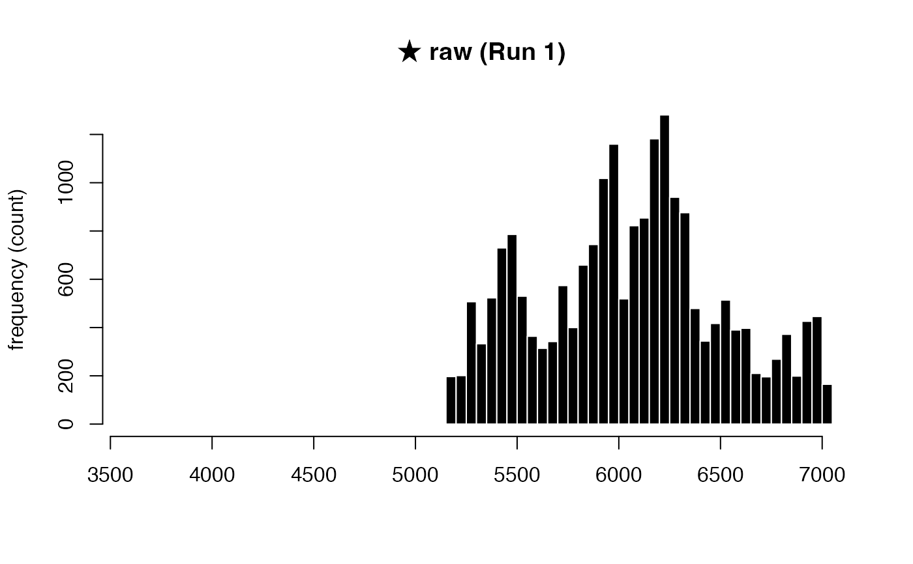
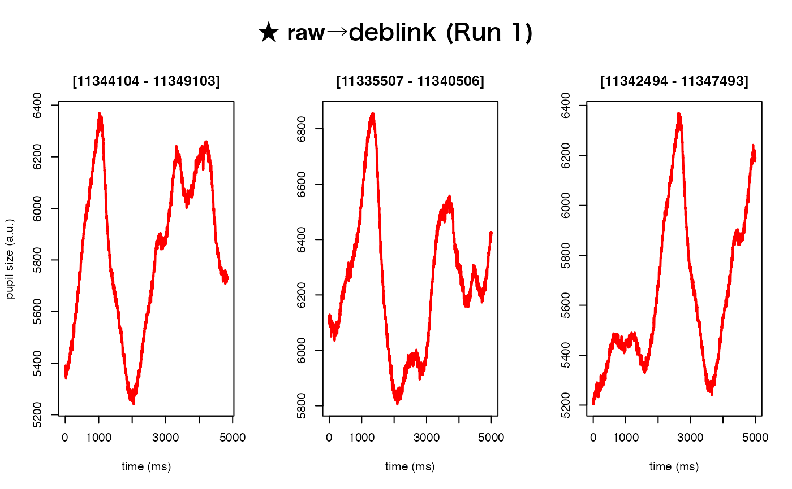
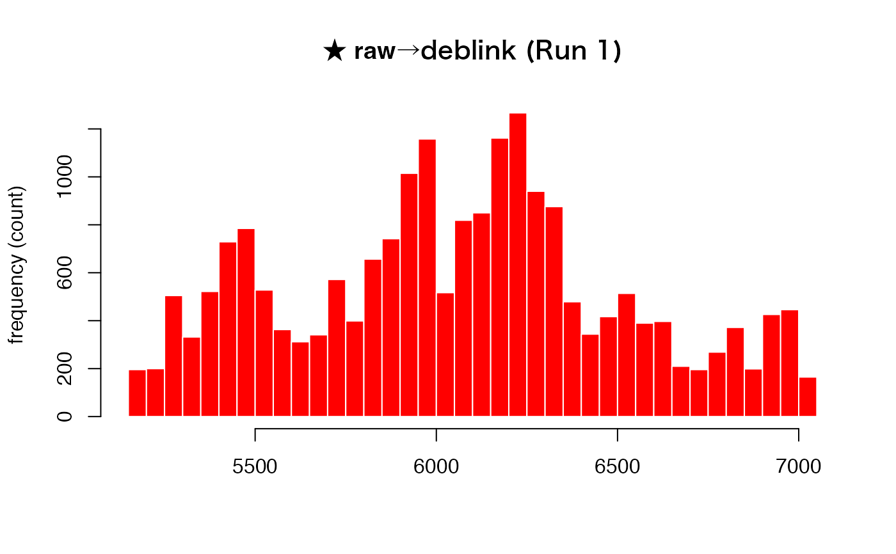
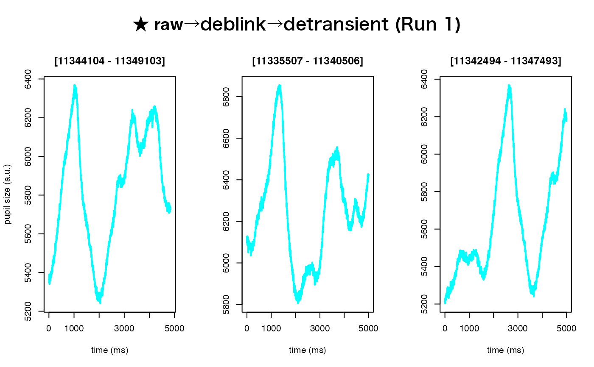
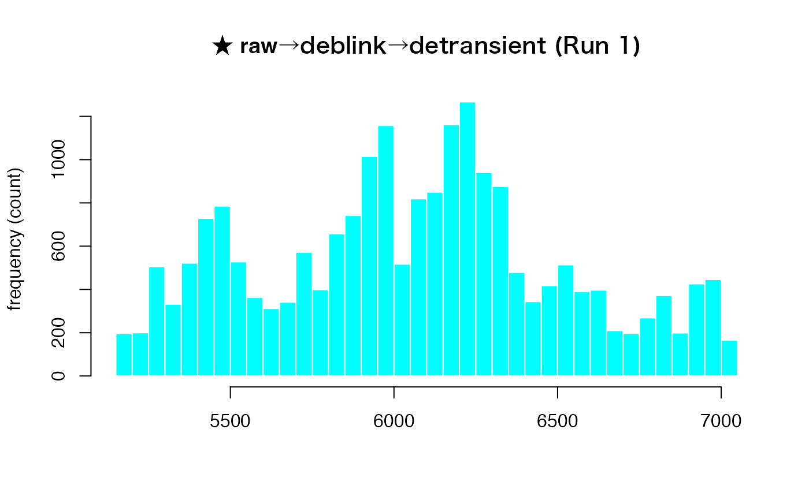

The intended use of this method is for removing pupil samples that emerge
more quickly than would be physiologically expected. This is accomplished by
rejecting samples that exceed a "speed"-based threshold (i.e., median
absolute deviation from sample-to-sample). This threshold is computed based
on the constant n, which defaults to the value 16.
Arguments
- eyeris
An object of class
eyerisdervived fromload().- n
A constant used to compute the median absolute deviation (MAD) threshold.
- mad_override
Default
NULL. This parameter provides alternative options for handling edge cases where the computed properties here withindetransient()\(\text{mad\_val}\) and \(\text{median\_speed}\) are very small. For example, if $$\text{mad\_val} = 0 \quad \text{and} \quad \text{median\_speed} = 1,$$ then, with the default multiplier \(n = 16\), $$\text{mad\_thresh} = \text{median\_speed} + (n \times \text{mad\_val}) = 1 + (16 \times 0) = 1.$$ In this situation, any speed \(p_i \ge 1\) would be flagged as a transient, which might be overly sensitive. To reduce this sensitivity, two possible adjustments are available:If \(\text{mad\_thresh} = 1\), the transient detection criterion is modified from $$p_i \ge \text{mad\_thresh}$$ to $$p_i > \text{mad\_thresh}.$$
If \(\text{mad\_thresh}\) is very small, the user may manually adjust the sensitivity by providing an alternative threshold value via the
mad_overrideparameter.
Details
Computed properties:
pupil_speed: Compute speed of pupil by approximating the derivative ofx(pupil) with respect toy(time) using finite differences.Let \(x = (x_1, x_2, \dots, x_n)\) and \(y = (y_1, y_2, \dots, y_n)\) be two numeric vectors with \(n \ge 2\); then, the finite differences are computed as: $$\delta_i = \frac{x_{i+1} - x_i}{y_{i+1} - y_i}, \quad i = 1, 2, \dots, n-1.$$
This produces an output vector \(p = (p_1, p_2, \dots, p_n)\) defined by:
For the first element: $$p_1 = |\delta_1|,$$
For the last element: $$p_n = |\delta_{n-1}|,$$
For the intermediate elements (\(i = 2, 3, \dots, n-1\)): $$p_i = \max\{|\delta_{i-1}|,\,|\delta_i|\}.$$
median_speed: The median of the computedpupil_speed: $$median\_speed = median(p)$$mad_val: The median absolute deviation (MAD) ofpupil_speedfrom the median: $$mad\_val = median(|p - median\_speed|)$$mad_thresh: A threshold computed from the median speed and the MAD, using a constant multiplier \(n\) (default value: 16): $$mad\_thresh = median\_speed + (n \times mad\_val)$$
Examples
system.file("extdata", "memory.asc", package = "eyeris") |>
eyeris::load_asc() |>
eyeris::deblink(extend = 50) |>
eyeris::detransient() |>
plot(seed = 0)
#> ℹ Plotting block 1 from possible blocks: 1




